Seven characterization tests of the 3-DOF tendon-driven finger. Each result is processed from the raw test data; figures and headline metrics are shown below.
1 · Fingertip Impedance
Equivalent mechanical impedance of the fingertip, measured across three finger configurations. Each pose behaves as a mass–spring–damper: spring-dominated below resonance, a resonant dip, and mass-dominated above. The extended pose is the most compliant and lightly damped; the retracted pose is the stiffest; the mid pose is the most damped.
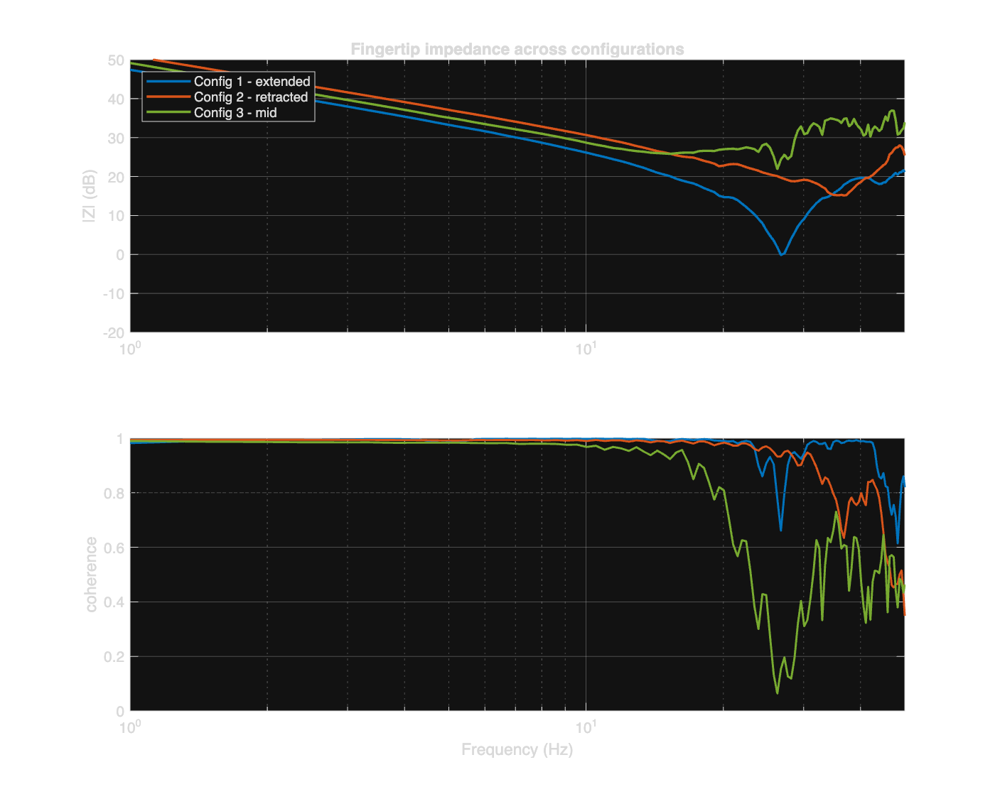
Impedance magnitude (top) and coherence (bottom). Config 1 shows a deep, sharp resonance (light damping); config 2 is stiffest; config 3 is the most damped, but its coherence falls above ~15 Hz.
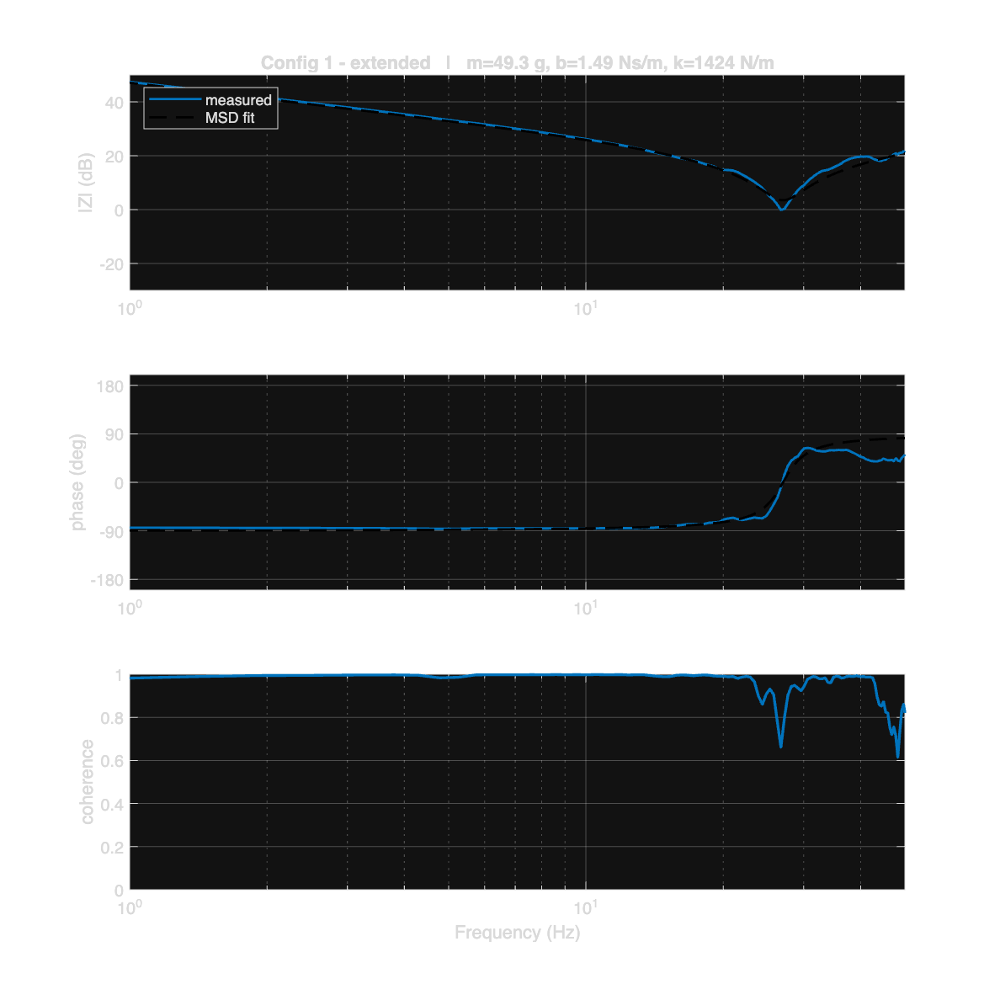
Config 1 — extended.
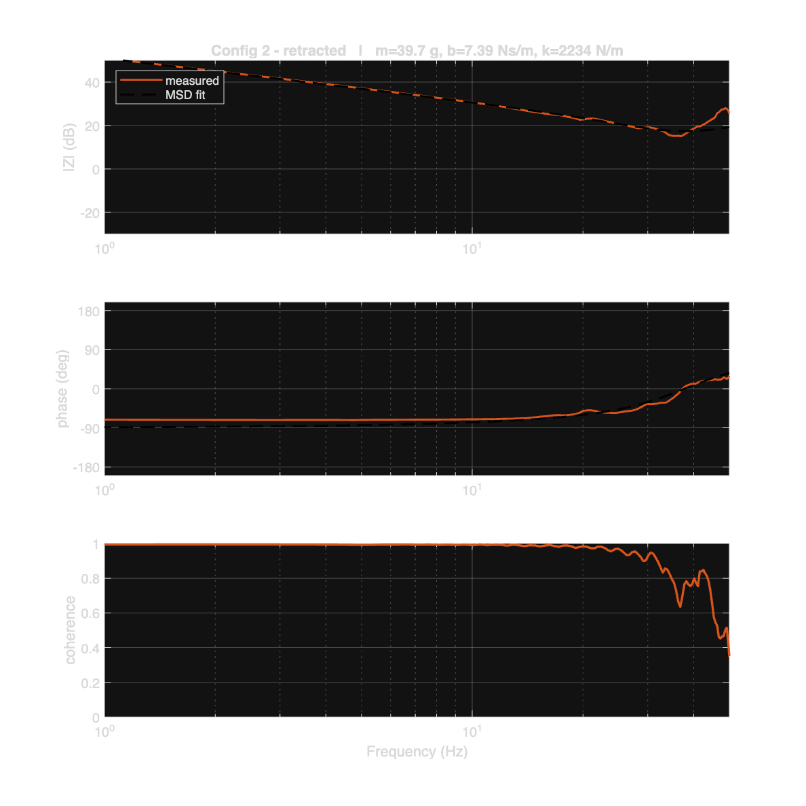
Config 2 — retracted.
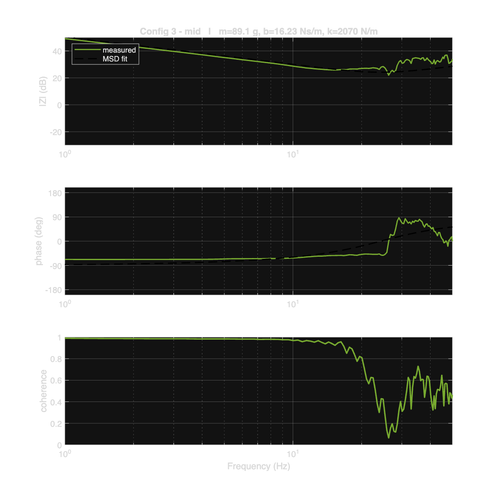
Config 3 — mid.
modalfrf (H1 displacement→force) → ÷jω → tfest mass–spring–damper, cross-validated in Python. Config 3's mass/damping are least reliable (low coherence). No unloaded-baseline subtraction, so values include the test fixture.
2 · Trajectory Tracking
The fingertip traces a 1:2 Lissajous figure in the flexion plane while a marker is tracked by camera. Integrating the position error over the complete path gives an RMS tracking error of 1.27 mm — about 4% of the 30 mm figure. A free-scale registration gives the same RMS at ×0.99 scale, confirming the calibration to ~1%.
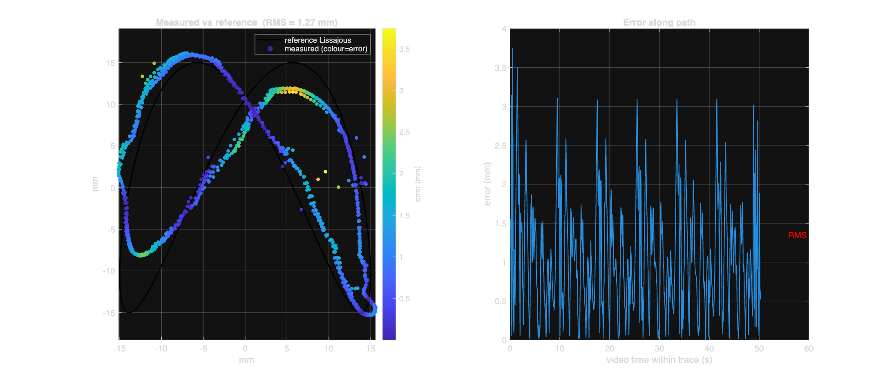
Measured path coloured by error, over the reference Lissajous, with error vs path.
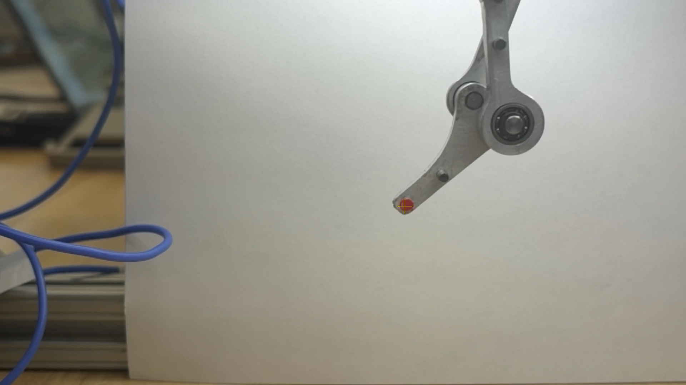
Marker detection — tracked centroid on the fingertip dot.
3 · Sinusoidal Position Control
Closed-loop joint position-tracking frequency response from a position chirp. The controller tracks with near-unity gain up to ~3 Hz and a clean low-pass rolloff, with a −3 dB bandwidth of ~3.8 Hz. Two independent repeat sweeps give the same gain curve (linear, repeatable).
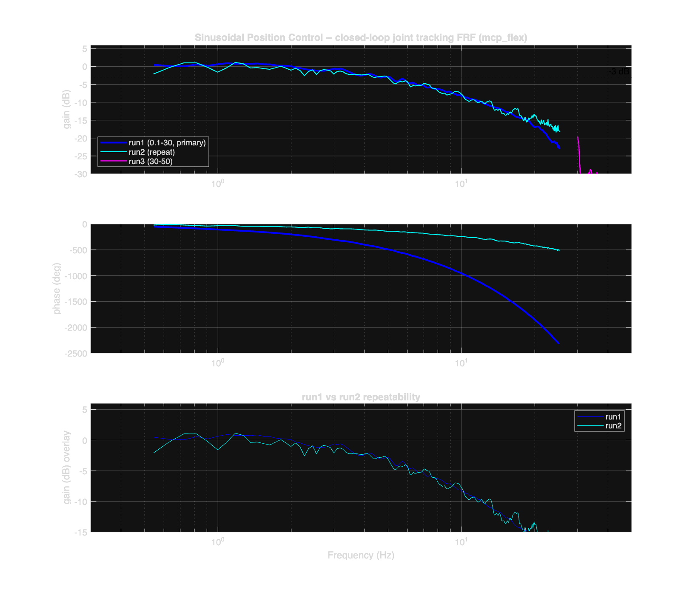
Closed-loop tracking response (gain, phase, and run-to-run repeatability).
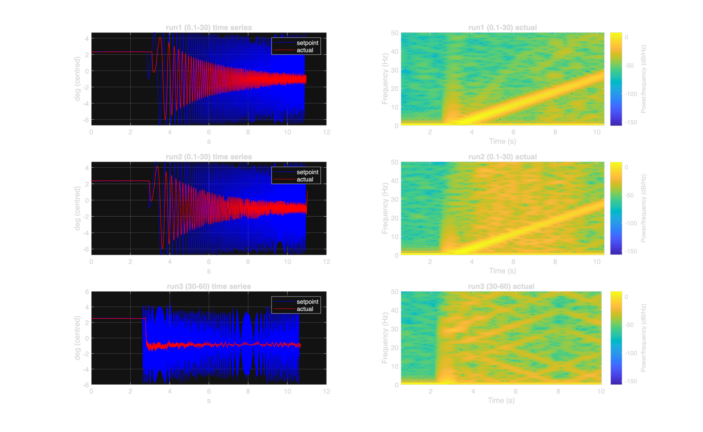
Per-run time series and spectrograms; runs 1–2 sweep cleanly to ~30 Hz, run 3 folds at the 50 Hz Nyquist limit.
4 · Velocity Control Bandwidth
Fingertip velocity-tracking response under a commanded velocity chirp. The velocity gain is essentially flat with no −3 dB rolloff in the tested band (encoder ~0.6 from 6–28 Hz; motion-capture flat over 1.8–6.8 Hz), so the velocity bandwidth exceeds the tested range; a first-order fit extrapolates a corner near 37.6 Hz.
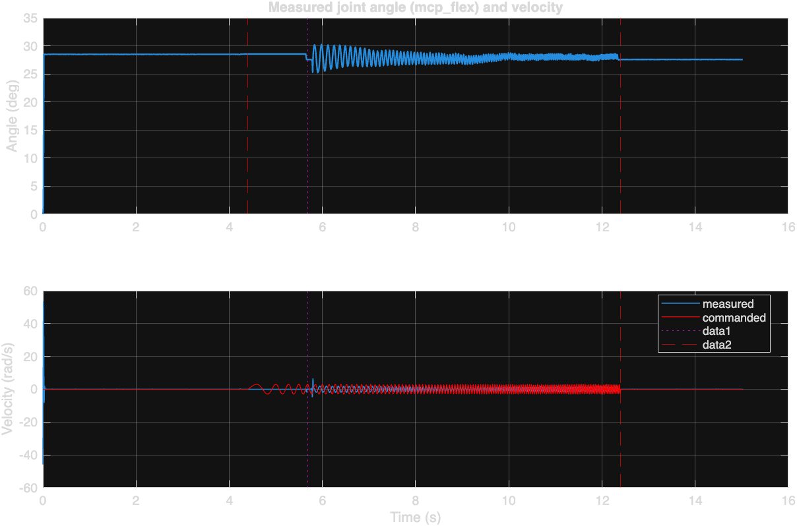
Measured angle & velocity vs the commanded chirp.
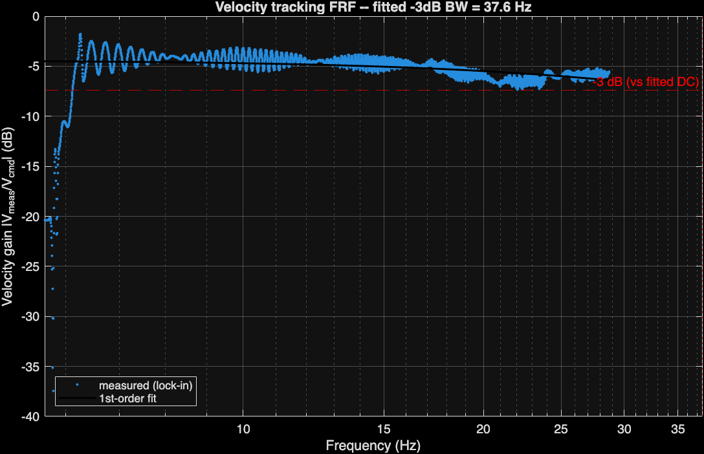
Velocity gain vs frequency with first-order fit.
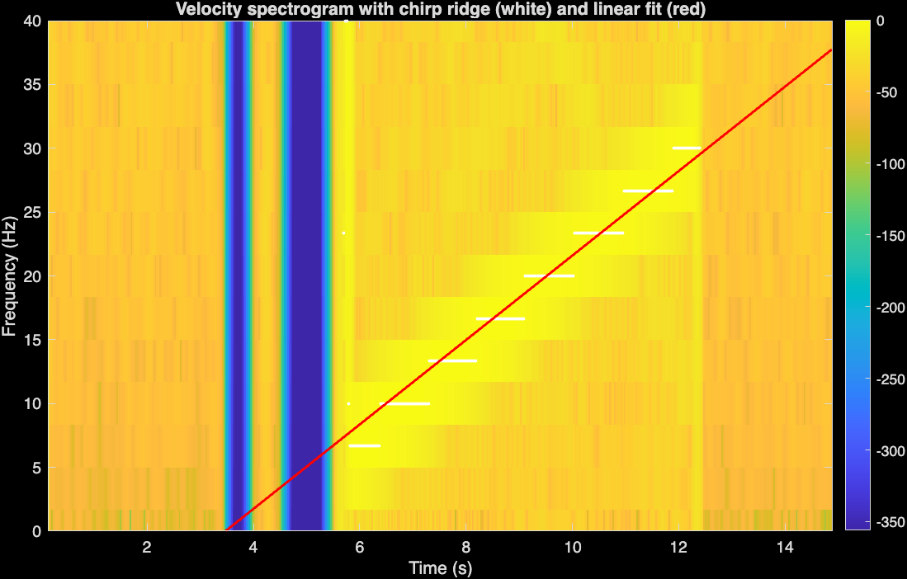
Velocity spectrogram with chirp ridge.
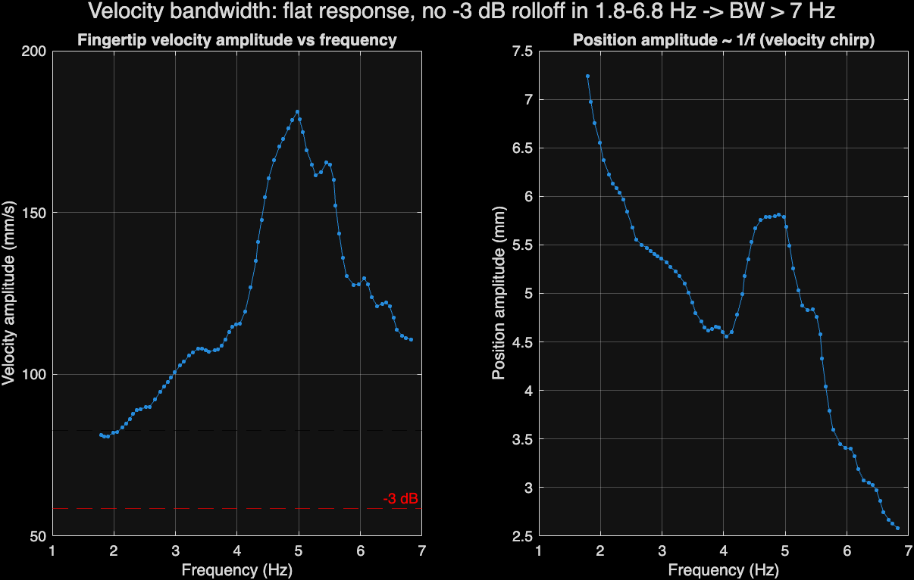
Motion-capture fingertip velocity amplitude vs frequency.
5 · Finger Cycle Time
Time to complete one full extension–flexion cycle through the entire range of motion, driven by a 3.5 Hz square wave. The finger tracks essentially perfectly: mean cycle time 0.290 s (3.45 Hz, within 1.5% of command) over 10 cycles, with the full ~89° MCP range reached every cycle.

Full run — actual vs commanded MCP angle, 10-cycle analysis window shaded.

The 10 analysed cycles with detected boundaries.
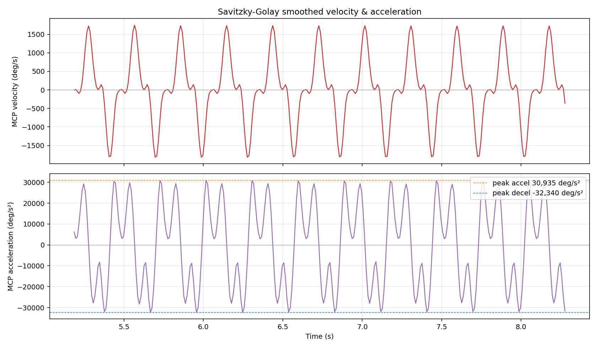
Smoothed velocity and acceleration traces.
6 · Step Position Control
Step response tracking a 1 Hz square-wave position reference against a spring environment (pip/dip joint, 45.8° ↔ 74.5°). The controller settles all 27 steps within the 0.5 s half-period, with fast rise and essentially no overshoot.

Full run — square-wave command and measured pip/dip response.

All steps time-aligned and overlaid.

Representative step annotated with metrics.
7 · Step Force Control
Force step response tracking a square-wave force reference (alternating every ~1 s) at several force levels, measured with a stationary load cell. For the well-driven mid/high levels the response is fast (rise ~35–70 ms), settles in ~0.2–0.3 s, and overshoots only ~2–3 %. Steady-state ripple grows with force level.

Measured load-cell force at each level (dotted lines mark the detected low/high). 10 N and 20 N are clean; 3 N is small/noisy and 15 N drifts.

Rising steps time-aligned and overlaid; 10 N is the cleanest exemplar, 20 N shows visible overshoot.